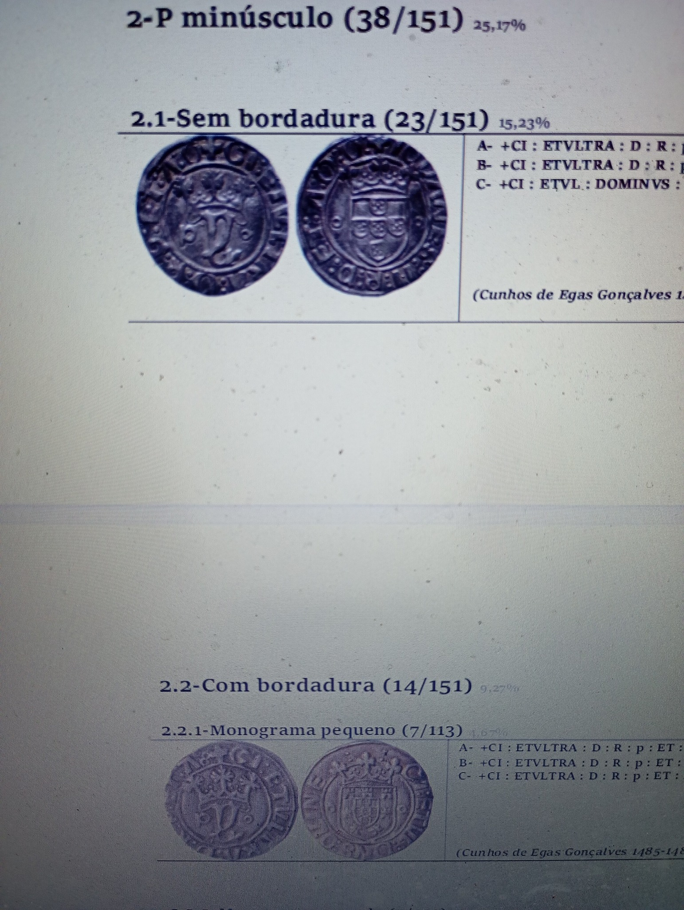

A Portuscalle Numismática apresentou recentemente um vintém "sem fronteira" (without border), que apodou de particularmente raro em virtude dessa característica.
A peça foi concorrida...
Uma consulta à bibliografia, no entanto, indica que, no Porto, nem são raros os vinténs "com fronteira", nem os "sem fronteira", sendo que os segundos aparecem até com maior frequência dentro do sub-tipo.
Deixando de lado os anglicismos da Portuscalle Numismática, a verdade é que o famoso vintém de D. João II, sem bordadura, procurado pelos coleccionadores, é o de Lisboa. No Porto é ao contrário. E, dentro do tipo de "P" minúsculo, o vintém mais desejado pelos coleccionadores, ironicamente, é o que apresenta bordadura.
Recomenda-se a consulta do artigo "As moedas portuenses de D. João II", quer ao senhor Alberto Silva, aliás douto, quer aos clientes da Portuscalle Numsimática.
No fundo, a alfabetização é pressuposto das democracias. Os mercados são outra coisa. E as ditaduras também.